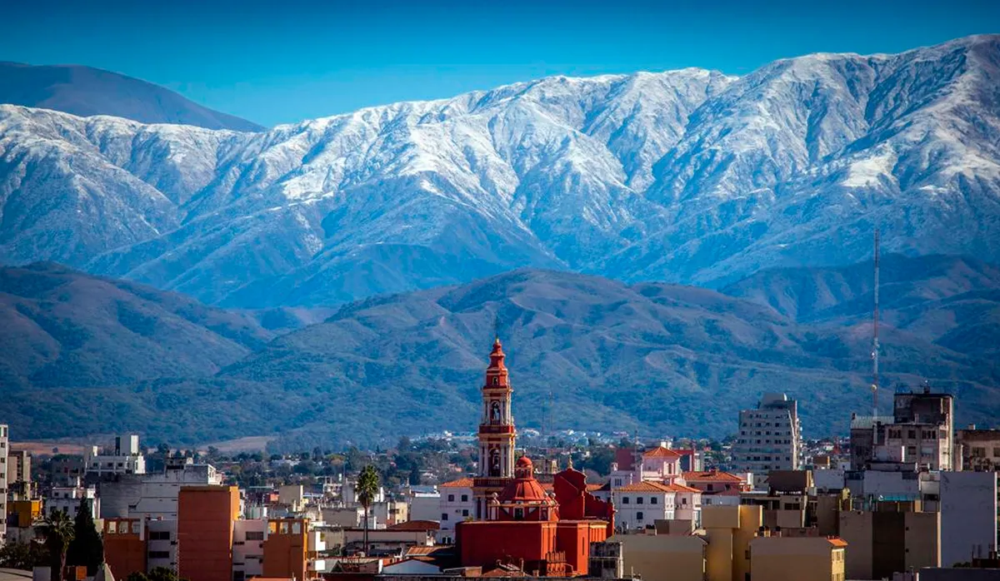
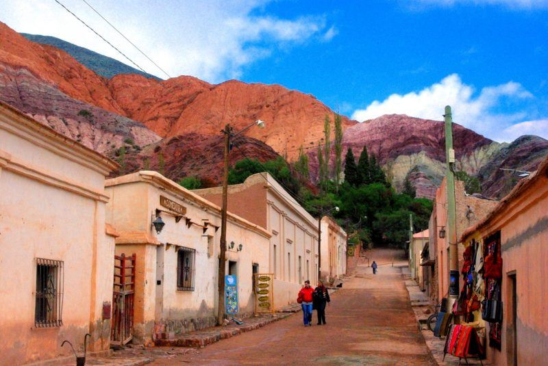
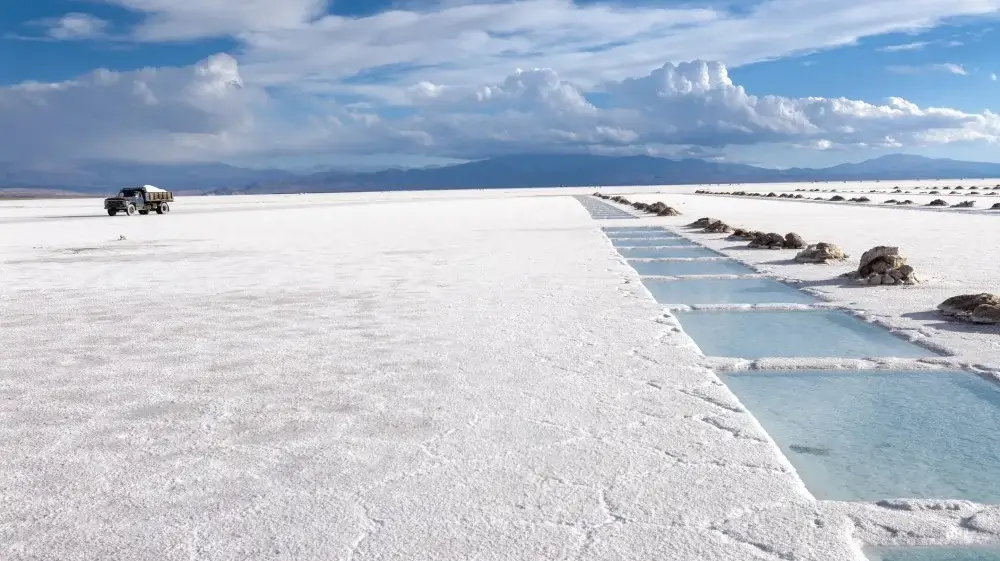
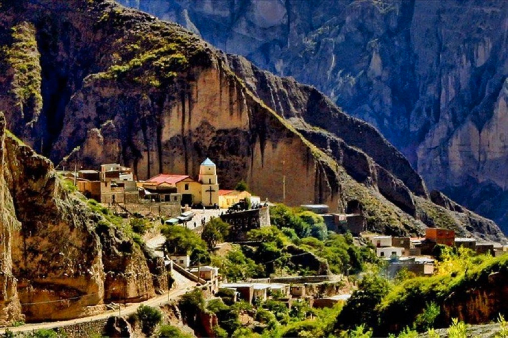

Salta es la capital de la provincia de Salta y una de las ciudades más importantes del Noroeste argentino. La ciudad es conocida por su arquitectura colonial, su gastronomía y su cultura. Salta es un excelente lugar para aprender sobre la historia y la cultura de la región.
La Quebrada de Humahuaca es un valle ubicado en la provincia de Jujuy, conocido por sus paisajes naturales y su riqueza cultural. La quebrada alberga una serie de pueblos coloridos, como Purmamarca, Tilcara y Humahuaca. La Quebrada de Humahuaca es un lugar ideal para disfrutar de la naturaleza y la cultura.
Las Salinas Grandes son un salar ubicado en la provincia de Jujuy, conocido por sus impresionantes paisajes. El salar es uno de los más grandes del mundo y ofrece una experiencia única de la belleza natural del Noroeste argentino.
Iruya es una ciudad ubicada en la provincia de Salta, en la Quebrada de los Condores. La ciudad es conocida por su belleza natural, su aislamiento y su cultura indígena. Iruya es un destino popular para los amantes de la naturaleza y la cultura.
